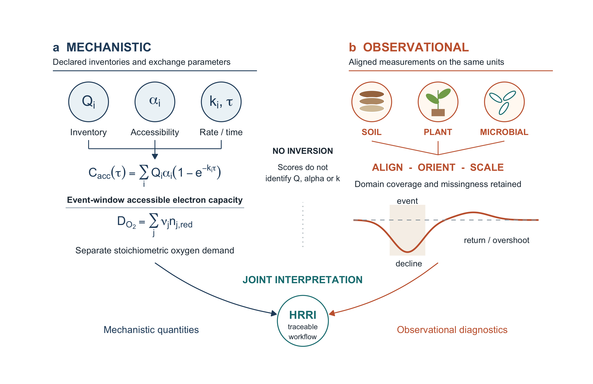
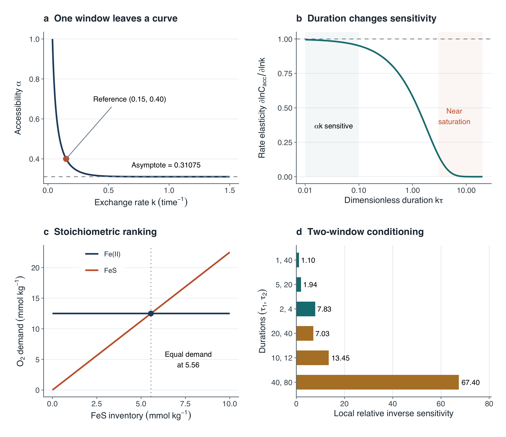
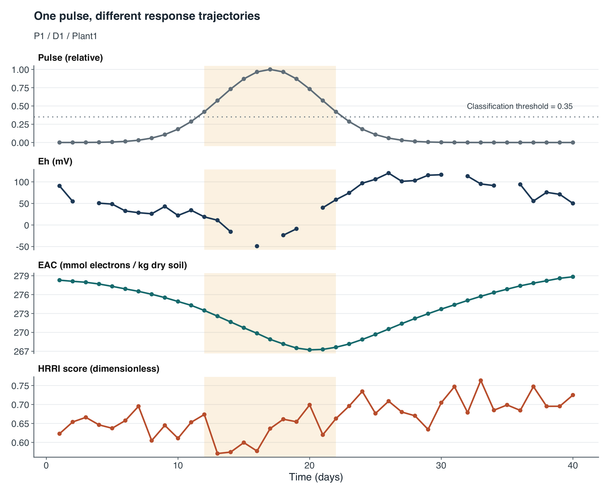
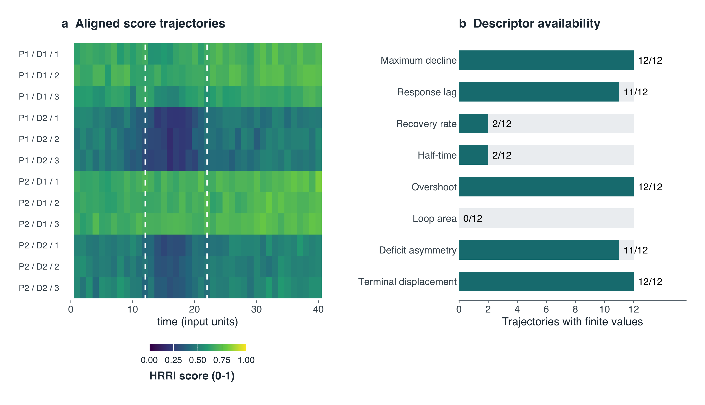
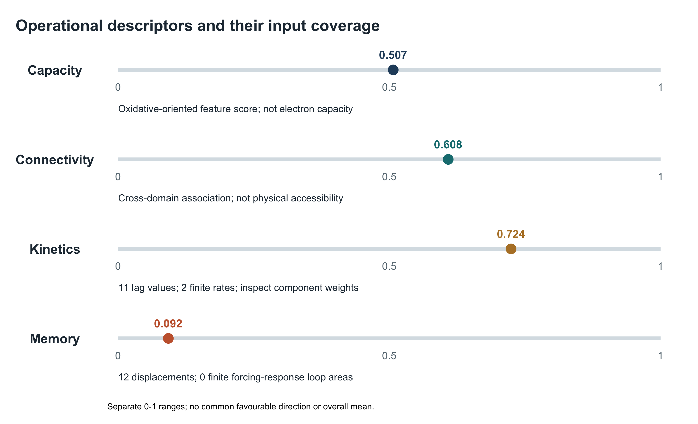
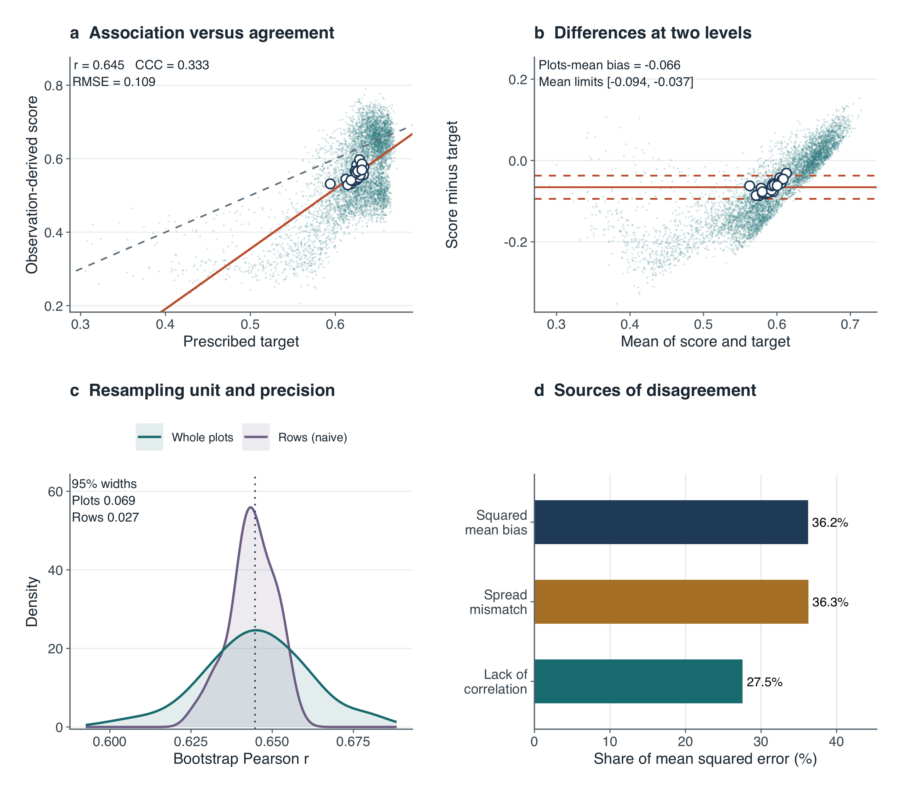

vignettes/HRRI_paper_figures.Rmd
HRRI_paper_figures.RmdAll six manuscript figures have native R implementations. Figures 1 and 2 are schematic and analytical illustrations; Figures 3–5 use the 12-trajectory gallery; Figure 6 uses a separate 24-plot simulation. These datasets must not be conflated. The scores and reference target share a synthetic generator: this is conditional internal agreement, not field validation. No Python installation is needed.
| Paper figure | R function |
|---|---|
| 1: Complementary routes | plot_rri_framework() |
| 2: Identifiability and accounting | plot_rri_identifiability() |
| 3: Forcing and responses | plot_rri_timeseries() |
| 4: Dynamics and availability | plot_rri_recovery_diagnostics() |
| 5: Operational profile | plot_rri_properties() |
| 6: Internal agreement | plot_rri_accuracy() |
show_figure(paper_figures$Fig1_framework)
Declared inventories and exchange parameters define accessible electron capacity; reduced-species inventories and oxidation endpoints separately define oxygen demand. Observations yield domain scores and recovery diagnostics. The curve is schematic, and no inverse map from scores to reservoir parameters is implied. EAC and EDC remain separate directional capacities.
show_figure(paper_figures$Fig2_identifiability)
The one-pool illustration uses Q = 100, accessibility = 0.4, rate = 0.15 and duration = 10. One window leaves a curve of equivalent accessibility-rate pairs. Rate elasticity decreases near saturation; two-window inverse sensitivity quantifies local conditioning, not a confidence interval. The FeS comparison assumes oxidation of Fe(II) to Fe(III) and sulfide to sulfate. The equal-demand boundary is calculated from the declared stoichiometry, not fitted from scores.
show_figure(paper_figures$Fig3_trajectories)
The Gaussian forcing is shown explicitly with its 0.35 classification threshold. The highlighted days are 12–22; nonzero forcing extends outside that classified interval. Eh, measured-inventory EAC and the score have separate axes and units. Missing observations remain gaps. EAC is not Cacc.
show_figure(paper_figures$Fig4_recovery_diagnostics)
Rows follow fixed identifier order and share a 0–1 score colour
scale. Event markers are placed at the supplied observation times.
Availability counts are computed from the recovery table. A finite value
is not evidence of adequate precision, ecological validity or successful
return. Rate and half-time share fit eligibility;
fit_status, n_fit and the declared event
window remain essential.
show_figure(paper_figures$Fig5_operational_profile)
The four descriptors are shown separately with provenance notes and
numerical 0–1 ranges. These are not common physical units or a common
favourable direction. The displayed timing and memory coverage counts
come from the supplied recovery table, not manuscript constants. Inspect
props$property_table for methods and gal_rec
for trajectory-level support. No centre mean or polygon area is
used.
show_figure(paper_figures$Fig6_internal_agreement)
Small points are paired rows; open points are plot means. The score-on-target line and the identity line distinguish association from numerical agreement. Difference limits are the plot-mean bias plus or minus 1.96 SD of plot-mean differences; they are descriptive, not row-level limits or confidence intervals. Clustering follows independent plots, not individual plant-depth trajectories. Bootstrap draws condition on the fitted scores; the scoring pipeline is not refitted. This fast vignette uses 100 resamples, so its bootstrap density and interval widths are illustrative. The supplied export script defaults to the paper’s 2000 resamples, with the same seed. The MSE partition uses population moments and closes algebraically.
Run explicitly in your R session (not executed during vignette builds):
figure_dir <- file.path(getwd(), "HRRI_paper_figures")
paper_n_boot <- 2000L
source(system.file("examples", "export_paper_figures.R", package="HRRI"), local=TRUE)PDF preserves vector geometry. Installing the suggested
svglite package also provides editable-text SVG. PNG is
exported at 600 dpi for previews; increasing raster resolution does not
substitute for vector output. Use the supplied physical dimensions so
text and panel spacing remain consistent. Scientific interpretation and
provenance belong in the captions as well as the figures.
Keiluweit, M., Wanzek, T., Kleber, M., Nico, P., & Fendorf, S. (2017). Anaerobic microsites have an unaccounted role in soil carbon stabilization. Nature Communications, 8, 1771. https://doi.org/10.1038/s41467-017-01406-6
Klüpfel, L., Piepenbrock, A., Kappler, A., & Sander, M. (2014). Humic substances as fully regenerable electron acceptors in recurrently anoxic environments. Nature Geoscience, 7, 195–200. https://doi.org/10.1038/ngeo2084
Kobayashi, K., & Salam, M. U. (2000). Comparing simulated and measured values using mean squared deviation and its components. Agronomy Journal, 92, 345–352. https://doi.org/10.2134/agronj2000.922345x
Lin, L. I. (1989). A concordance correlation coefficient to evaluate reproducibility. Biometrics, 45, 255–268. https://doi.org/10.2307/2532051
Sander, M., Hofstetter, T. B., & Gorski, C. A. (2015). Electrochemical analyses of redox-active iron minerals: a review of nonmediated and mediated approaches. Environmental Science & Technology, 49, 5862–5878. https://doi.org/10.1021/acs.est.5b00006
Thompson, A., Chadwick, O. A., Rancourt, D. G., & Chorover, J. (2006). Iron-oxide crystallinity increases during soil redox oscillations. Geochimica et Cosmochimica Acta, 70, 1710–1727. https://doi.org/10.1016/j.gca.2005.12.005
These describe the framework this package implements. None is published and two are under review; the entries are provisional and should be replaced with the published versions.
Ghotbi, M., Ghotbi, M., Komluski, J., & Holtgrewe-Stukenbrock, E. H. HRRI: direction-aware diagnostics for soil–plant–microbiome redox recovery across hydroclimatic disturbances. In preparation.
Ghotbi, M., Kolody, B. C., Ghotbi, M., & Holtgrewe-Stukenbrock, E. A Theory of Hydroclimatic Redox Resilience. Submitted to Communications Earth & Environment. — the source of the capacity, connectivity, kinetics and memory decomposition used throughout this vignette.
Ghotbi, M., Ghotbi, M., Mühling, K. H., & Stukenbrock, E. H. Rhizosphere redox recovery after hydrological disturbances: mechanisms across the soil–plant–microbiome continuum. Submitted to Soil Biology & Biochemistry.